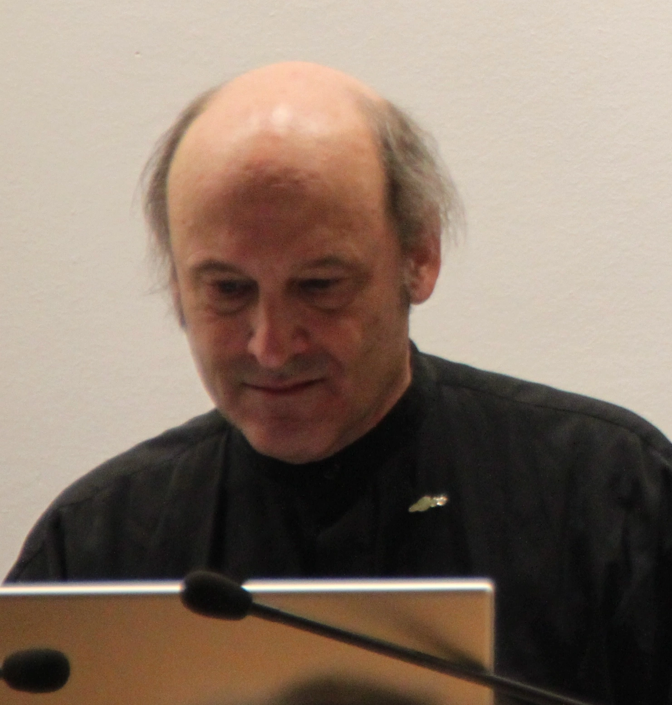
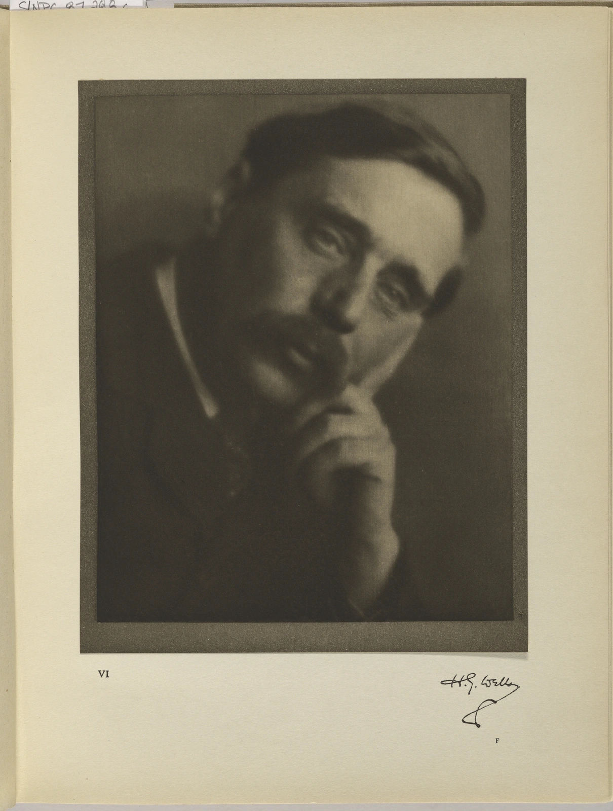

ACM SIGCHI美国计算机学会人机交互专门兴趣组
ACM SIGCHI是美国计算机学会内部围绕人机交互研究与实践形成的专业共同体。其成员来自计算机科学、软件工程、心理学、设计、社会学、信息科学和人类学等领域。共同议题是人怎样使用、理解并改变技术，以及技术的设计怎样影响人的活动。组织介绍

Adam Summerville亚当·萨默维尔
Adam Summerville是游戏人工智能研究者与开发者，研究程序化内容生成、机器学习、关卡表示和生成系统评价。他曾任教于加州州立理工大学波莫纳分校；现行个人公开简介将工作单位列为CD Projekt Red。2025年学术专著的作者介绍记载了他在The Molasses Flood担任首席AI工程师、从事程序化内容生成的职业阶段。[1][2][3]
Ajay Mandlekar阿杰伊·曼德尔卡尔
Ajay Mandlekar 是机器人学习研究者，现任 NVIDIA GEAR 团队 Staff Research Scientist，领导基于模拟的研究，关注合成数据、现实与模拟之间的迁移，以及类人机器人基础模型训练。他于2016—2022年在斯坦福大学攻读电气工程博士，导师为 Silvio Savarese 和 Fei-Fei Li；现职与研究职责依据2026年11月核验的本人资料。本人主页。
Albrecht Schmidt阿尔布雷希特·施密特
阿尔布雷希特·施密特（Albrecht Schmidt）是研究人机交互、泛在计算与媒体技术的德国计算机科学家，自2017年起任慕尼黑大学计算机科学教授，领导Human-Centered Ubiquitous Media教席。他的研究围绕数字技术怎样扩展人的感知、记忆和理解，以及人在自动化系统中怎样保持控制展开。LMU官方人员档案
Alex Mitchell亚历克斯·米切尔
Alex Mitchell 是新加坡国立大学传播及新媒体系的互动媒体研究者，研究互动故事如何被创作、体验和再次体验。他把计算机科学、人机交互、游戏细读和创作实践结合起来，尤其关注诗性玩法、重玩与闭合感、作者工具以及合作讲故事。他结合细读、玩家访谈和原型制作，观察交互规则怎样影响读者对故事的理解。[1][2]
Andrew Stern安德鲁·斯特恩
Andrew Stern（安德鲁·斯特恩）是交互角色、游戏与计算叙事的设计者、程序员和研究者。他从PF.Magic的虚拟宠物与婴儿角色出发，与Michael Mateas共同制作2005年发布的实时交互戏剧《Façade》，并持续讨论生成、自然语言界面、戏剧管理和玩家能动性怎样结合。其工作把人工智能放进具体创作过程：系统的价值既来自能够计算什么，也来自角色如何被感知、玩家如何表达，以及行动能否在关系中留下后果。可信角色、开放故事与程序化作者性是理解这一路径的核心。
Anima Anandkumar阿尼玛·阿南德库马尔
Anima Anandkumar（正式文献中也使用 Animashree Anandkumar）是计算机科学研究者，加州理工学院计算与数学科学 Bren 讲席教授。她的研究贯穿概率潜变量模型、张量方法、非凸优化、神经算子和科学机器学习，也参与具身智能与开放世界智能体项目。其重要方法论贡献，是把对数据结构与物理规律的假设放进可学习模型，研究它们何时能带来计算效率、样本效率和跨尺度泛化。
Antonios Liapis安东尼奥斯·利亚皮斯
Antonios Liapis是游戏人工智能与计算创造力研究者，现任马耳他大学Institute of Digital Games副教授。他研究程序化内容生成、混合主动权设计、设计者建模及人工进化，关注计算机怎样成为人在创作过程中的合作者。其代表项目包括辅助关卡设计工具Sentient Sketchbook，以及将关卡结构与声音配置联系起来的Sonancia。[1][2][3]
Artineering艺术工程软件公司
Artineering（艺术工程软件公司，中文为说明性译名）是一家在塔林创立、开发风格化渲染工具的公司。公司成立于2019年，创始人为Santiago Montesdeoca。其主要产品沿着MNPR、MNPRX与Flair的技术路线，将实时渲染、非写实图像效果与艺术指导结合起来，面向三维动画制作。公司历史
Ashwin Gopinath阿什温·戈皮纳特
Ashwin Gopinath 是从事分子编程、纳米制造与计算研究的研究者及创业者。他的学术工作将 DNA 折纸的自组装能力与半导体微加工结合，研究怎样把分子器件精确地放到芯片上，并控制位置、方向与光学行为。他也是语言智能体方法 Reflexion 的共同作者。2024年夏离开 MIT 教职后，MIT 官方资料将其列为机械工程访问科学家；2026年创业项目资料则列其为 Sentra 共同创始人兼 CEO。MIT官方简介，项目方履历
Association for Computing Machinery美国计算机学会
美国计算机学会（Association for Computing Machinery，简称ACM）是面向计算领域的国际科学与教育专业学会，将研究者、教育工作者、产业从业者和学生连接起来。其工作包括组织技术会议、出版研究文献、支持专业社群与教育、制定职业伦理原则，以及通过奖项认可贡献。名称中的“Computing Machinery”保留了成立时的历史语境，今天的活动覆盖计算机科学和信息技术的广泛领域。ACM官方事实材料

Ben Samuel本·塞缪尔
Ben Samuel 是研究互动叙事、社会模拟与计算辅助表演的计算机科学家、游戏创作者和演员。他参与 Prom Week、Comme il Faut 与 Ensemble Engine 的开发，又与 James Ryan、Adam Summerville 合作制作结合模拟与真人即兴表演的 Bad News。其研究把玩家、作者、演员和计算系统视为共同形成故事的参与者，关心这些参与者如何获得足够的信息、表达手段与创作控制。[1][2]
Bernard Suits伯纳德·舒兹
Bernard Herbert Suits 伯纳德·舒兹（1925—2007）是长期任教于加拿大滑铁卢大学的哲学家，以游戏定义、玩与体育的概念分析，以及关于闲暇和理想生活的哲学寓言著称。他把游戏解释为自愿接受特定限制、尝试克服由此产生的障碍的活动；《The Grasshopper: Games, Life and Utopia》则把这套分析引向更大的问题：如果人不必再为生存劳动，什么活动仍值得从事？他的工作使游戏同时成为分析行动的对象和思考美好生活的工具。[1][2][3]
Blizzard Entertainment暴雪娱乐
Blizzard Entertainment（暴雪娱乐）是1991年创立的美国游戏开发与发行机构，以Warcraft、StarCraft、Diablo、World of Warcraft、Hearthstone及Overwatch等系列著称。它把可辨识的世界、规则与角色同长期联机服务结合，形成跨越即时战略、动作角色扮演、多人在线和竞技游戏的创作体系。其历史也是游戏从成品软件转向持续服务的历史：开发、平衡、内容更新、社群治理和商业模式不断相接。暴雪品牌、具体工作室、Activision Blizzard集团与2023年后的微软归属需要分别说明。

Brenda Laurel布伦达·劳雷尔
Brenda Laurel 布伦达·劳雷尔是美国交互设计研究者、作者、教师和创业者，以把戏剧理论、参与式研究与数字媒介设计联系起来著称。她的工作横跨早期个人电脑、游戏、虚拟现实、面向女孩的娱乐产品与设计教育，代表著作包括《Computers as Theatre》，项目包括《Placeholder》及 Purple Moon 的游戏与网络世界。[1][2][3][4]
Brian Sutton-Smith布莱恩·萨顿-史密斯
Brian Sutton-Smith 布莱恩·萨顿-史密斯（1924—2015）是出生于新西兰的玩研究者，长期在美国从事发展心理学、教育学与民俗学工作。他从儿童自发游戏、粗野笑话和故事采集出发，反复追问人为何需要玩，以及不同社会为何以不同价值解释玩。《The Ambiguity of Play》把关于玩的主导说法整理为七种修辞；其晚期工作进一步把玩理解为面对不确定性和情绪冲突的一组多层实践。他既维护儿童自身的表达，也拒绝把玩一概美化为温和、进步和有教育成效的活动。[1][2]
Chaowei Xiao
Chaowei Xiao 是研究人工智能安全、语言模型与智能体安全的计算机科学研究者。现任约翰斯·霍普金斯大学电气与计算机工程系助理教授，同时为 NVIDIA Research 研究员；本人主页在2026年11月还列有访问斯坦福大学的经历。他取得清华大学学士和密歇根大学安娜堡分校博士学位，加入约翰斯·霍普金斯之前曾在威斯康星大学麦迪逊分校及亚利桑那州立大学任助理教授。大学官方资料、本人主页。

Chris Crawford克里斯·克劳福德
Chris Crawford 克里斯·克劳福德是美国游戏设计师、程序员、作者与互动叙事系统研究者。他参与了个人电脑游戏早期的创作与职业组织建设，作品从《Eastern Front (1941)》《Balance of Power》延伸到人物关系与故事世界系统。贯穿其工作的，是如何把人的选择、社会关系和情感经验变成可运作的计算结构。[1][2][3][8]
Christian Holz克里斯蒂安·霍尔茨
克里斯蒂安·霍尔茨（Christian Holz）是苏黎世联邦理工学院计算机科学系副教授，领导Sensing, Interaction & Perception Lab（SIPLAB）。他研究人机交互、传感、混合现实与生理信号建模，关注传感器怎样观察人的动作和状态，以及计算系统怎样据此提供输入与反馈。ETH当前教授目录、本人主页
City University of Hong Kong香港城市大学
City University of Hong Kong（香港城市大学，简称城大；英文亦用CityUHK、CityU）是香港一所兼具研究与专业教育取向的大学。其前身为1984年成立的香港城市理工学院，1994年获大学地位，取得自行颁授学位的资格。学校由早期副学位教育发展为提供本科、授课式研究生、专业博士与研究式研究生课程的机构。创意媒体、工程、商学、人文社会科学及其他专业领域，构成其跨学科发展的不同部分。[1]
Cyan青色工作室
Cyan 是由 Rand Miller 与 Robyn Miller 于1987年创立的美国游戏开发机构，以《神秘岛》（Myst）、《神秘岛续作：里文》（Riven）及其所发展的世界探索与谜题设计闻名。它的历史包含儿童互动软件、光盘多媒体、第一人称冒险、持续在线世界、众筹制作、虚拟现实与独立游戏发行，不能完全归结为某一种画面风格。《神秘岛》中的岛屿与书写世界构成了其长期辨识度，但更稳定的设计问题是：如何让一个人通过观察、移动、操作与解释，逐渐理解陌生世界的秩序。
Dan Pinchbeck丹·平奇贝克
Dan Pinchbeck（丹·平奇贝克）是英国游戏设计者、作家与研究者，The Chinese Room的共同创办人。他以第一人称游戏研究和开发实践探索空间、声音与叙事的关系，参与创作《Dear Esther》《Amnesia: A Machine for Pigs》《Everybody’s Gone to the Rapture》等作品，并著有《DOOM: SCARYDARKFAST》。他的工作把学术问题带入可公开游玩的实验，又使实验面对真实玩家、商业制作与集体劳动。行走、倾听、环境中的缺席及不完全确定的故事，是其重要表现资源，但其作品也跨越恐怖、VR与横向动作冒险。
Dave Mark戴夫·马克
Dave Mark是游戏AI设计者、程序员与顾问，Intrinsic Algorithm的创办者及长期负责人。他以效用式行为选择、数学建模、模块化影响图和设计工具著称，并参与GDC AI Summit及AI Game Programmers Guild的组织工作。其主要著作Behavioral Mathematics for Game AI于2009年出版；咨询经历涉及Guild Wars 2、EverQuest Next等不同阶段的项目。[1][2][3]
David Knoebel戴维·克内贝尔
David Knoebel 是美国视觉诗与电子文学创作者，具有雕塑训练背景。其网络作品集 Click Poetry 将词语安排在可以运动、变换视点和响应输入的屏幕空间中。他的作品通常规模不大，通过少量文字与规则之间的复杂关系，探索阅读、空间、身体注意及记忆；他与Reiner Strasser合作的《Breathe》也是网络诗史中讨论较多的作品。
David Silver戴维·西尔弗
David Silver（戴维·西尔弗）是以深度强化学习、计算机围棋和自我对弈研究著称的计算机科学家。他参与或领导的AlphaGo、AlphaZero、MuZero等项目，把神经网络的经验学习与搜索结合，改变了机器下棋的方法。2026年其个人主页列明身份为Ineffable Intelligence首席执行官、伦敦大学学院教授，以及DeepMind强化学习团队前负责人。[1][2]
Demis Hassabis德米斯·哈萨比斯
Demis Hassabis（德米斯·哈萨比斯）是从游戏开发、认知神经科学进入人工智能研究的科学家与企业家，参与创立DeepMind，并因蛋白质结构预测与John Jumper共同获得2024年诺贝尔化学奖的一半。2026年8月Google正式宣布，他转任Google DeepMind主席、Alphabet首席科学家，并继续领导Isomorphic Labs。[1][2][3]
Departement Informatik苏黎世联邦理工学院计算机科学系
D-INFK是苏黎世联邦理工学院计算机科学系（Departement Informatik，英文Department of Computer Science）的官方简称。该系成立于1981年，处于数学、工程与自然科学的交界，开展基础研究，设计可靠、高效与安全的计算和信息技术。官方概况
Department of Communications andNew Media 传播及新媒体系
Department of Communications and New Media（传播及新媒体系，CNM）隶属于新加坡国立大学文学暨社会科学院，研究传播、媒介技术与社会的相互关系。其教学研究结合媒介文化、传播管理、计算传播和互动媒体设计，游戏与互动叙事是其中一条与人机交互、创作实践及社会问题相接的路径。[1][2]
Derek Yu德里克·余
Derek Yu 是视觉艺术家、游戏设计者和写作者，也是独立工作室 Mossmouth 的创办者。他与 Jon Perry 制作过《Eternal Daughter》，与 Alec Holowka 共同创作《Aquaria》，以《Spelunky》及其续作探索动作、程序生成与规则组合，又与多位独立开发者完成五十款游戏组成的《UFO 50》。其创作把危险而可理解的世界、玩家的自主表达、精密的操作与小团队的长期实践联系起来。
Edward Berman爱德华·伯曼
Edward Berman，也使用 Eddie Berman 署名，是研究几何机器学习、科学计算与模型不确定性的研究者。其公开工作涵盖等变函数的置信度校准、动力学模型中的平滑性、天文成像点扩散函数、Julia 科学计算，以及代码编辑和语言智能体。Northeastern 的 Geometric Learning Lab 将其列为本科阶段校友，并在2026年资料中记为 Harvard 博士生及 NSF GRFP Fellow；Harvard 几何机器学习组也列有其成员记录。原研究组名录，Harvard研究组
Eidgenössische Technische Hochschule Zürich苏黎世联邦理工学院
苏黎世联邦理工学院（Eidgenössische Technische Hochschule Zürich，英文ETH Zurich）是瑞士联邦体系中的科学与技术大学，创办于1855年。学校的发展与现代瑞士建设科学、工程和创新能力的目标相连，基础研究、专业教育及社会对话构成其公开使命。官方概况
Electronic Arts艺电
Electronic Arts（艺电，简称EA）是一家开发和发行数字互动娱乐产品的游戏公司，总部位于美国加利福尼亚州红木城。其产品覆盖主机、个人电脑和移动设备，并包含联网内容及持续运营服务。体育模拟、动作射击、生活模拟和休闲游戏共同构成其作品范围。公司概况

Emily Short埃米莉·肖特
Emily Short 是互动小说作家、叙事设计者、程序员与评论者。她从文字冒险社群起步，把与人物交谈、解释文本、改变词语和推测动机发展为游戏的核心活动；同时参与 Inform 7、Versu 和 Spirit AI Character Engine 等创作工具的设计。她的工作贯穿个人实验作品、商业叙事项目、程序化写作和开发者教育，尤其关心作者如何给予玩家可以表达意图的行动，而系统又如何理解、回应并延续这些行动。[1][2]

Ernest Adams欧内斯特·亚当斯
Ernest Adams 欧内斯特·亚当斯是游戏设计师、作者、教育者和顾问，以游戏设计教材、职业社群建设及互动叙事研究著称。他参与过光盘互动产品、体育游戏和大型发行商项目，也长期通过专栏与工作坊讨论设计中的实际问题。2026年其本人主页列出的身份是瑞典乌普萨拉大学哥得兰校区研究附属人员。[1][2][3]
Espen Aarseth埃斯本·阿尔塞斯
Espen Aarseth（埃斯本·阿尔塞斯）是研究数字文学、游戏美学和玩家行为的学者，以1997年《Cybertext: Perspectives on Ergodic Literature》及对游戏与叙事关系的论述著称。他创办《Game Studies》并任创刊主编。2024年获任香港城市大学创意媒体学院院长，截至2026年11月，官方师资目录仍列其院长、游戏研究讲席教授身份；此前曾在卑尔根大学与哥本哈根信息技术大学任职。[1][2][3]
European Research Council欧洲研究理事会
European Research Council（欧洲研究理事会，简称ERC）是欧盟于2007年设立的前沿研究资助机构。它通过竞争性资助支持研究者提出和组织项目，覆盖自然科学、工程、社会科学与人文学科。科学卓越性与研究者驱动的选题，是其制度设计的重要原则。机构概况
Federico Cassano费代里科·卡萨诺
Federico Cassano 是研究代码语言模型、程序生成和智能体训练的研究者。其学术工作包括多编程语言评估框架 MultiPL-E、低资源编程语言数据方法 MultiPL-T、OpenTau 类型预测、代码编辑基准和 Reflexion。工业研究则涉及代码模型训练与基础设施：截至2026年11月，本人主页写明在 SpaceXSI（所链接域名为 x.ai）从事 Grok 预训练，并将领导 Cursor Composer 系列研究列为既往经历。本人主页
Friedrich Nietzsche弗里德里希·尼采
Friedrich Nietzsche（1844—1900），德国哲学家、古典语文学家与作家。他把欧洲文化的危机落实为一个价值问题：当支撑道德、知识与人生目的的宗教保证失去效力，人怎样理解自身的欲望、痛苦和创造能力？他的回答贯穿悲剧艺术、历史意识、道德谱系、虚无主义和生命肯定，写作形式则横跨学术论著、格言、论战、诗歌与哲学寓言。尼采的影响既来自某些著名概念，也来自他改变提问方式的做法：把“何者为真、何者为善”进一步追问为“谁需要这种真理和这种善，它们使什么样的生命成为可能”。
GeorgiosN. Yannakakis
Georgios N. Yannakakis 是马耳他大学 Institute of Digital Games 的人工智能教授，研究情感计算、玩家体验建模、程序化内容生成与计算创造力。他与合作者把主观体验的资料取得、偏好学习、适应内容和共同创作联系起来，并以教材、工具和产业合作推动游戏AI研究。其工作持续追问：系统怎样认识人的体验，以及这种认识如何改变游戏和设计过程。
Gilles Deleuze吉尔·德勒兹
吉尔·德勒兹（Gilles Deleuze，1925—1995）是法国哲学家，其工作由哲学史研究发展到差异、多样体、欲望、政治及艺术的系统思考。他与 Félix Guattari 合著《反俄狄浦斯》《千高原》和《什么是哲学？》，又独立撰写文学、绘画及电影研究。其核心问题是：事物的身份和秩序如何生成，思想如何遭遇尚未被既有概念识别的问题，新的生活与表达形式又怎样在具体关系中出现。
Gillian Smith吉莉安·史密斯
Gillian Smith 是研究程序化内容生成、计算创造力、人机交互与计算手工艺的游戏研究者和设计者，任伍斯特理工学院（WPI）计算机科学教授、Interactive Media & Game Development 项目主任。Smith 参与开发 Launchpad、Tanagra、Threadsteading 等系统，将生成器的表达能力、人的设计判断和制作材料联系起来，并研究程序中的社会价值、游戏劳动以及计算教育的参与边界。
Guanzhi Wang
Guanzhi Wang 是研究具身智能、开放式代理与机器人学习的计算机科学研究者。截至2026年11月，其个人学术页面列现职为 NVIDIA Research Scientist，研究重点为机器人基础模型的后训练与 agentic robotics。他参与的代表工作包括视觉策略泛化方法 SECANT、Minecraft 研究框架 MineDojo、以程序技能持续探索的 Voyager、多模态机器人模型 VIMA、奖励程序生成方法 Eureka，以及多游戏视觉行动模型 NitroGen。本人研究页面

H. G. Wells赫伯特·乔治·威尔斯
H. G. Wells（赫伯特·乔治·威尔斯，1866—1946）是英国小说家、社会评论者与游戏设计者。他用时间旅行、物种改造、隐身与星际入侵重新安排人类在世界中的位置，又在地板上用木块、玩具和规则试验共同生活的微型秩序。他的未来想象始终牵涉现实制度：谁能支配知识与技术，谁承担劳动和战争，谁有资格决定社会应当怎样改变。科学教育、文学叙事、世界国家与游戏实验共同构成其思想的张力；对进步的期待与对文明自毁的忧虑在这些写作中长期并存。
Hans-Martin Rall汉斯－马丁·拉尔
Hans-Martin Rall，亦以 Hannes Rall 署名，是动画导演、动画与改编研究者，任南洋理工大学艺术、设计与媒体学院教授及院长。他的研究把绘画、文学改编、亚洲视觉传统、虚拟现实和生成式技术联系起来，关注风格怎样组织体验，以及创作者如何对所呈现的文化、历史与事实承担责任。[1][2]
Hello Games你好游戏工作室
Hello Games 是英国独立游戏开发与发行公司，作品由《Joe Danger》系列的特技动作，扩展到《No Man’s Sky》的程序生成宇宙、《The Last Campfire》的小规模叙事谜题，以及正在开发的《Light No Fire》。截至2026年11月，其官方介绍列出 Guildford 与 Cambridge 两处英国工作地点。公司以小团队制作技术与美术相结合的游戏，并在持续更新大型作品的同时保留较小的创作项目。
Human-Centered Ubiquitous Media以人为中心的泛在媒体教席
Human-Centered Ubiquitous Media（以人为中心的泛在媒体教席，简称HCUM）是慕尼黑大学计算机科学研究所的教席和研究组，由Albrecht Schmidt领导，官方首页记载其自2017年10月起设于LMU。团队处于人机交互、媒体技术与泛在计算的交叉地带，研究数字系统怎样扩展人的感知与认知能力。官方首页
ICIDS交互数字叙事国际会议
ICIDS是International Conference on Interactive Digital Storytelling（交互数字叙事国际会议）的简称，自2008年起作为年度会议系列，连接交互叙事的计算研究、理论、设计与艺术实践。它研究的对象包括叙事游戏、虚拟角色、生成故事、交互纪录片、数字新闻、XR和装置等，核心问题是参与者的行动怎样改变叙事经验，以及系统、作者与参与者如何共同承担故事的形成。会议后来成为ARDIN的主要学术会议，历届地点、主题和组织者变化，系列身份则通过持续共同体、治理及出版延续。
IDEO艾迪欧设计公司
IDEO（艾迪欧设计公司）是一家从产品与交互设计发展起来的设计和创新公司。David Kelley、Bill Moggridge与Mike Nuttall于1991年在帕洛阿尔托共同创立公司。其工作将行为观察、原型制作与组织实践结合起来，设计对象从单个产品延伸到服务、业务与机构的运作方式。公司历史

Ian Horswill伊恩·霍斯威尔
Ian Horswill 是美国西北大学计算机科学副教授，研究智能体控制、游戏人工智能、交互叙事与声明式生成工具。他的工作横跨具身机器人和计算媒介，关注如何让系统以可解释、可编写、可运行的方式产生行为，以及这些行为怎样支持玩家和作者的新体验。论文中也署名 Ian D. Horswill、Ian Douglas Horswill。[1][2][3]
Institute for Infocomm Research资讯通信研究院
Institute for Infocomm Research（资讯通信研究院，I²R，读作“i-squared-r”）是新加坡A\STAR体系中的历史信息通信研究机构，2002年由既有实验室整合成立。其研究横跨通信网络、信号处理、人工智能、语言和互动媒体，并通过联合实验室及技术转移连接公共研究与产业应用。2026年，I²R与Institute of High Performance Computing的力量整合进入A\STAR Institute of Advanced Intelligence and Computing（IAIC）；I²R原官网现已明确引导读者前往IAIC。[1][2][3]
Isabelle Raynauld伊莎贝尔·雷诺
Isabelle Raynauld 是加拿大的编剧、纪录片导演和电影研究者，任教于蒙特利尔大学。她研究剧本如何成为独立的书写与阅读对象，也以纪录片、声音和虚拟现实实验探索影像怎样组织知识。她的工作贯穿电影史、叙事分析、编剧教学与研究型创作：既追问故事如何写成，也追问一段文字、一道界面或一种观看方式怎样预先安排观众的期待与行动。
Jacques Derrida雅克·德里达
雅克·德里达（Jacques Derrida，1930—2004）是法国哲学家，出生于当时处于法国殖民统治下的阿尔及利亚。他以对现象学、语言、书写与西方形而上学的细读发展了解构，提出延异、踪迹、增补、可重复性等问题，后来持续讨论法律、正义、马克思主义遗产、好客、宽恕和动物。他的工作深刻影响哲学、文学与文化研究，也因解释标准、政治判断和论证形式引起长期争论。
Jacques Lacan雅克·拉康
雅克·拉康（Jacques Lacan，1901—1981）是法国精神分析家与精神科医生。他以“回到弗洛伊德”为方向，把语言、认同、欲望和享乐重新组织为主体理论，提出想象界、象征界与实在界、大他者、对象 a 及话语结构等概念。其工作由临床与持续的研讨班发展而来，对哲学、文学、电影和文化研究产生深远影响，也因论证方式、性别理论、训练制度及临床实践引起长期争论。

Jane McGonigal简·麦戈尼格尔
Jane McGonigal（简·麦戈尼格尔）是研究游戏、现实行动与未来模拟的设计者和作者，在未来研究所从事研究，2026年该机构通讯称其为社会模拟总监。她以《Reality Is Broken》《SuperBetter》《Imaginable》，以及大型协作、替代现实和未来预测游戏著称，关注人们怎样把游玩中的协作、尝试与目标感带入生活。[1][2][3]

Jeff Orkin杰夫·奥金
Jeff Orkin是游戏AI工程师、研究者与创业者，代表工作包括F.E.A.R.的目标导向行动规划、MIT的The Restaurant Game，以及将规划和数据学习结合的角色技术。2026年GDC讲者资料列其为Bitpart AI联合创始人兼首席执行官。他的研究持续追问：怎样把可执行行动、社会角色与语言联系起来，使角色能够适应变化，又让制作团队能够掌握其行为。[1][2][5][6]
Jeffrey Goldstein杰弗里·戈尔德斯坦
Jeffrey H. Goldstein是研究玩、玩具、幽默与娱乐媒介的心理学者，长期讨论人为什么主动接近某些媒介经验，以及这些经验怎样进入学习、社交和日常生活。他的工作既包括玩具与儿童发展的跨学科编著，也包括暴力娱乐吸引力、电子游戏研究方法和技术玩具的研究。其共同编辑的游戏研究手册，体现了心理学与文化、历史、设计方法之间的交流。理解他的立场，关键是将媒介内容、使用动机、具体活动和可测量结果分别说明，再追踪它们怎样相接。
Jim Whitehead吉姆·怀特黑德
Jim Whitehead，正式姓名 Emmet James Whitehead，是加州大学圣克鲁兹分校计算媒介教授、Baskin工程学院本科体验副院长。他的研究由协作式网络编辑、软件演化与缺陷预测，扩展到游戏关卡生成、共同创作工具和生成艺术。其游戏研究特别关注设计知识怎样写进表示和约束，生成器怎样接受人的修改，以及怎样分析一个系统实际能够产生的内容范围。

Johan Huizinga约翰·赫伊津哈
约翰·赫伊津哈 约翰·赫伊津哈（1872—1945）是荷兰文化史家，其研究从印度语言与戏剧、荷兰地方史，扩展到中世纪晚期的生活形式、人文主义以及现代文化危机。《Herfsttij der Middeleeuwen》与《Homo ludens》分别讨论一个时代如何通过象征和形式理解生活，以及玩如何参与文化的形成。他既把历史理解为对过去经验的重建，也要求文化以自我限制、相互承认和诚实竞争维持其秩序。[1][2][3]
Johanna Pirker约翰娜·皮尔克
约翰娜·皮尔克（Johanna Pirker）是一位研究游戏、虚拟现实、人机交互与人工智能的奥地利计算机科学家。她研究玩家行为与线上社群，也开发用于科学学习的交互环境。2025年7月，她出任慕尼黑工业大学计算、信息与技术学院N-Dimensional User Experience教授，研究重点包括交互式、自适应与沉浸式系统。TUM教授档案、任职采访
John E. Laird约翰·E·莱尔德
John E. Laird是人工智能与认知架构研究者，长期参与Soar的发展，研究怎样把知识、推理、记忆、感知和学习组织成完整智能体。密歇根大学在其2022年退休时授予John L. Tishman工程学荣休教授及电气工程与计算机科学荣休教授身份。现任Center for Integrated Cognition联合主任和首席认知架构师。[1][2]
Joost Raessens乔斯特·拉伊森斯
Joost Raessens（乔斯特·拉伊森斯）是乌得勒支大学媒介理论学者，研究玩与游戏怎样参与文化、身份、公共生活和生态关系。他从电影哲学与参与式媒介研究出发，提出理解数字文化的游玩转向，并把研究推进到说服性游戏、公民参与、气候危机与XR体验。他关注的不只是作品传递何种信息，也包括规则和界面让人怎样行动、形成何种自我理解，以及媒介产业本身怎样消耗资源。文化的游玩化、参与的层次与游戏的生态条件构成其相互连接的论题。

Joseph Weizenbaum约瑟夫·魏岑鲍姆
Joseph Weizenbaum 约瑟夫·魏岑鲍姆（1923—2008）是计算机科学家、ELIZA 的作者，也是计算机技术社会批判的重要代表。他的工作从计算机硬件、银行数据处理和符号表处理，延伸到自然语言会话、模型的认识限度与技术责任。使他持续受到关注的核心问题是：程序能够产生某种令人信服的表现时，人们怎样判断它究竟做了什么，又应把多少解释权和决定权交给它。[1][2][3]
Josh McCoy乔希·麦科伊
Josh McCoy，官方人员目录亦作 Joshua McCoy，是研究社会智能、互动叙事与游戏的计算机科学家，现任加州大学戴维斯分校计算机科学及电影与数字媒介副教授。他参与 Comme il Faut 与 Prom Week，把社会关系转化为可推理、可行动的游戏系统；其工作又涉及具身社会互动、实体工艺界面及人物与学习体验的结合。[1]
Josh Sawyer乔什·索耶
Josh Sawyer 乔什·索耶是游戏设计师与总监，担任 Obsidian Entertainment 黑曜石工作室的工作室设计总监。他的代表作包括《Fallout: New Vegas》《Pillars of Eternity》及其续作《Deadfire》，以及历史叙事冒险游戏《Pentiment》。他的工作连接角色扮演系统、团队设计指导与历史题材创作，尤其重视玩家选择如何得到具体回应。[1][2]
Julian Togelius朱利安·托格利乌斯
Julian Togelius 是瑞典计算机科学家，研究游戏人工智能、程序化内容生成、演化计算与通用智能。截至2026年11月，他任纽约大学计算机科学与工程教授、Game Innovation Lab 主任，并兼任 Nof1 的 Head of AI。他参与建立游戏AI竞赛与研究框架，研究机器怎样玩游戏、创造内容和理解玩家，也通过教材与面向公众的著作讨论游戏对于智能研究的意义。
Jussi Holopainen尤西·霍洛派宁
Jussi Holopainen（尤西·霍洛派宁）是研究游戏设计、玩法美学与交互设计的芬兰学者，香港城市大学创意媒体学院副教授。他与Staffan Björk共同发展的玩法设计模式方法，尝试把设计者面对的选择、互动结构及其后果变成可以描述、比较和讨论的知识。其事业也包括诺基亚的研究工作，以及在澳大利亚和英国大学从事的游戏设计研究。原名亦作Jussi Pekka Holopainen。[1][2]
Karl Marx卡尔·马克思
卡尔·马克思（Karl Marx，1818—1883）是德国思想家、政治经济学批判者、新闻工作者和社会主义运动参与者。他研究人如何通过劳动与社会关系生产生活条件，资本主义怎样把劳动、财富和权力组织起来，以及人们如何在既定条件下改变制度。他的工作从哲学与新闻评论发展到历史分析、经济研究和政治组织，不能仅归为一套经济学说或后来某种国家制度的理论说明。
KarthikNarasimhan 卡尔蒂克·纳拉西姆汉
Karthik R. Narasimhan 是研究自然语言、强化学习与自主代理的计算机科学家，现为普林斯顿大学计算机科学副教授、Princeton Language and Intelligence 副主任。其研究从文本冒险游戏中的语言理解与决策，扩展至语言模型代理、搜索与记忆架构，以及网页、软件工程和人机对话任务的评估。本人资料另记有2017—2018年 OpenAI 研究科学家、2023—2025年 Sierra 研究负责人经历，并列 Curium 共同创始人身份；这些经历应按时期区分。本人学术页面
Lewis Carroll刘易斯·卡罗尔
刘易斯·卡罗尔（Lewis Carroll，1832—1898）是 Charles Lutwidge Dodgson 使用的文学笔名。他长期任职于牛津大学基督堂学院，兼具数学教师、逻辑学作者、摄影者及文学创作者的身份。两部《爱丽丝》以荒诞对话、游戏规则和语言变形形成独特的儿童文学；《逻辑游戏》《符号逻辑》及若干短篇论证，则将图式操作、推理教育和对逻辑基础的反思结合起来。
Linxi Fan范麟熙
Linxi “Jim” Fan 是研究通用具身代理的计算机科学研究者，现为 NVIDIA 高级研究科学家，并与 Yuke Zhu 共同领导 GEAR（Generalist Embodied Agent Research）团队。他的研究横跨游戏、机器人与软件操作，重点是让代理利用视觉、语言、行动数据与模拟环境，在不同任务和世界中获得可迁移能力。NVIDIA 人员页，GEAR 团队页
Ludwig-Maximilians-Universität München慕尼黑大学
慕尼黑大学（Ludwig-Maximilians-Universität München，简称LMU，英文LMU Munich）是德国的综合性研究大学，学科覆盖人文、社会科学、自然科学与医学。学校设有十八个学院，并通过研究中心、合作项目和学术设施连接不同领域。官方概况、组织结构
Macmillan and Co.麦克米伦公司
Macmillan and Co. 是源自1843年 Daniel 与 Alexander Macmillan 兄弟书业活动的英国出版社名称，19世纪的出版范围涵盖文学、科学、教育及大型参考工具书。它与刘易斯·卡罗尔、丁尼生、哈代和吉卜林等作者的关系，以及对《Nature》等出版物的投入，使其成为维多利亚时代知识生产与大众阅读的重要机构。历史上的合伙商号、1896年后的英国有限公司、美国分支及今日沿用 Macmillan 名称的各项业务，须按时期和法律实体区分。
Mark O. Riedl马克·O·里德尔
Mark O. Riedl 是研究计算叙事、游戏生成、人机共同创作与以人为中心的人工智能的计算机科学家。截至2026年11月，他任佐治亚理工学院 Interactive Computing 学院 Githesh Ramamurthy 人工智能讲席教授、机器学习中心主任，并领导 Human-Centered AI Lab。他的研究把故事当作可生成的体验、社会知识的载体以及人与智能体相互理解的媒介。

Mary Flanagan玛丽·弗拉纳根
Mary Flanagan（玛丽·弗拉纳根）是研究游戏、数字艺术与设计价值的艺术家、学者和游戏设计者，创立Tiltfactor实验室。达特茅斯学院教师名录列明其Sherman Fairchild数字人文杰出教授及实验室主任身份。她以《Critical Play》、与Helen Nissenbaum合著的《Values at Play in Digital Games》等作品，推动对游戏规则、界面和社会意义的共同研究。[1][2]
Michael Booth迈克·布斯
Michael Booth 迈克·布斯，通常署名Mike Booth，是游戏设计师、程序员与开发负责人，以《Left 4 Dead》的合作机制及AI系统著称。他创建Turtle Rock Studios，后来在Valve工作；2026年公开署名为Bad Robot Games首席创意官，并担任四人合作射击游戏《4:LOOP》的游戏总监。他的工作把角色行为、空间推理、敌人配置与团队经验联系起来。[1][2][3][7]
Michael Buro迈克尔·布罗
Michael Buro是计算机科学研究者，以棋类程序Logistello、选择性搜索方法ProbCut，以及不完全信息纸牌和即时战略游戏研究著称。阿尔伯塔大学现行目录将其列为计算科学系荣休教授。他的研究横跨启发式搜索、机器学习、实时规划、抽象和对手建模，重点在于有限计算资源与不充分信息条件下怎样作出较好的决定。[1][2]
Michael Mateas迈克尔·马蒂亚斯
Michael Mateas 是研究人工智能、游戏与计算媒介的学者及创作者，现为加州大学圣克鲁兹分校计算媒介荣休教授。他提出“表达性 AI”，与 Andrew Stern 共同创作互动戏剧 Façade，并参与社会模拟、戏剧管理、游戏生成和创作工具研究。其核心问题是，计算过程怎样成为具有文化意义的表达材料，作者如何组织可能发生的经验，玩家又如何在这些经验中理解并采取行动。
Michel Foucault米歇尔·福柯
Michel Foucault（1926—1984），法国哲学家与思想史研究者。他通过疯癫、医学、监狱、性、治理和古代伦理的历史，考察人如何成为知识的对象、权力的承受者及自身行为的主体。他的工作改变了许多熟悉问题的提法：精神疾病如何得到某种社会可见性，惩罚如何形成关于人的知识，人为什么被要求说出自身欲望的真相，自由又怎样在治理关系中被组织。考古学、谱系学和问题化构成其研究的不同工具，真理、权力与主体的关系则贯穿其中。
Microsoft Research微软研究院
Microsoft Research（微软研究院，简称MSR）是微软的研究共同体，自1991年起开展计算机科学及相关领域的基础和应用研究。它通过不同地区的实验室与专题组织，将学术研究、产业工程和跨学科合作连接起来。公开论文、研究工具、代码和数据，是其向外传播成果的重要形式。机构介绍
Mojang Studios莫姜工作室
Mojang Studios 是以《Minecraft》（《我的世界》）为核心的游戏开发机构，起源于瑞典斯德哥尔摩，现为微软旗下 Xbox 游戏工作室体系的成员。它从早期独立开发与玩家社群共同推动的沙盒游戏，发展为维护多种游戏版本、运营多人服务、支持创作者市场、开展教育应用及跨媒介品牌合作的机构。2020年采用 Mojang Studios 名称，官方说明特别强调了多项目和多地点的组织形态。更名公告
N-Dimensional User ExperienceN维用户体验教席
N-Dimensional User Experience（N维用户体验教席，简称NDX）是慕尼黑工业大学计算、信息与技术学院（CIT）内的教席，由Johanna Pirker主持。其官方定位聚焦交互式、沉浸式与虚拟环境，尤其关注游戏中的VR和AR，并将人机交互、游戏研究与AI联系起来。NDX官方首页
N. Katherine HaylesN·凯瑟琳·海勒
N. Katherine Hayles，文学、科学与技术研究者，研究信息、身体、计算和认知怎样共同塑造文化。她以控制论史和文学细读重新解释“后人类”，随后发展媒介特异性分析、比较媒介研究、技术生成及认知非意识等论题。她关心的始终是具体的关联：一个看似抽象的信息过程依赖什么物质载体，一种阅读方式怎样分配注意，人和机器各自在何处解释、判断并行动。电子文学、科幻、数字人文和人工智能因而在其研究中相互联系。
NUS Faculty of Arts and Social Sciences文学暨社会科学院
NUS Faculty of Arts and Social Sciences（新加坡国立大学文学暨社会科学院，FASS）是国大的人文与社会科学学院，历史源流可追溯至莱佛士学院的文理教育。传播及新媒体系属于这一学院。学院把人文解释、亚洲研究与社会科学方法置于共同组织中，数字媒介和游戏研究因而能够与文化、政治、身份、历史及设计实践发生联系。[1][2]
Nanyang Technological University南洋理工大学
Nanyang Technological University（南洋理工大学，NTU）是位于新加坡的研究型大学，现行大学于1991年成立，其直接前身为1981年的南洋理工学院。它在理工基础上发展商业、科学、医学、人文、社会科学与艺术教育；艺术、设计与媒体学院是其中把视觉创作、技术实践和人文研究联系起来的单位。[1][2]
National University of Singapore新加坡国立大学
National University of Singapore（新加坡国立大学，NUS）是位于新加坡的综合性研究大学。其历史汇合了医学、人文与科学教育的多条制度传统；现行组织同时覆盖专业学院、研究机构、跨学科教育和公共服务。互动媒体、游戏与数字文化研究在这里分布于传播、人文、计算和设计等单位之间，不能用单一院系代表整所大学。[1][2]
NeurIPS神经信息处理系统大会
NeurIPS，全称 Conference on Neural Information Processing Systems，是1987年创办的年度跨学术领域会议系列，由 Neural Information Processing Systems Foundation 组织。它是机器学习研究的重要发表与交流场所，内容涉及统计学习、优化、神经科学、认知科学、计算机视觉、语言、决策、机器人以及AI的社会技术问题。NeurIPS 是会议与共同体的名称，正式论文集长期使用《Advances in Neural Information Processing Systems》。会议官方简介、论文集档案。

Nick Montfort尼克·蒙特福特
Nick Montfort 尼克·蒙特福特是计算文学艺术家、麻省理工学院数字媒体教授，并在挪威卑尔根大学数字叙事中心担任 Professor II 与首席研究员。他以互动小说、诗歌生成器、叙事系统、代码与平台研究，以及面向艺术和人文学科的编程教育著称。Trope Tank 是他创建并主持的实验室与工作室，在MIT与纽约开展研究和创作。[1][2]

Nick Walton尼克·沃尔顿
Nick Walton 是 AI Dungeon 的最初创作者、Latitude 创办人及首席执行官。他把大语言模型的文本续写变成可反复进行的冒险活动：玩家提出行动，系统延续情境，双方共同塑造故事。其工作从2019年黑客松原型发展到面向玩家与创作者的线上平台，又延伸至具有持续世界状态的 Voyage。研究他的贡献，需要同时考察交互形式、上下文与记忆、创作者工具，以及生成服务的成本和治理。[1][2]
Nicolas Szilas尼古拉·西拉斯
Nicolas Szilas是研究游戏、交互叙事与学习的计算叙事学者，在日内瓦大学TECFA工作。他以IDtension系统探索“智能叙述者”怎样根据参与者行动生成事件，并通过叙事行为、用户模型和体验评估，把经典叙事学与人工智能接合。其研究从娱乐和数字艺术扩展到脑损伤家庭、阿尔茨海默病照护者的训练模拟。叙事在这里既是可形式化的事件关系，也是人在时间中理解、决定和反思的经验；两者之间的转换构成其持续问题。
Noah Shinn诺亚·希恩
Noah Shinn 是研究程序生成与语言智能体的程序员、研究者及创业者，代表工作包括 Reflexion、OpenTau 类型预测、代码编辑评估和 τ-bench。他早期在 Northeastern University 的编程语言研究中工作，后成为 Sierra 早期成员；2026年9月的本人访谈以 Instinct 创始人身份讨论个人智能体。其工作的重要联系，是让系统使用执行证据发现错误，把经验保留到后续行动，并用可检查的任务评价这种改进。本人研究资料，2026年访谈节目资料
Noah Wardrip-Fruin诺亚·沃德里普－弗鲁因
Noah Wardrip-Fruin 是游戏与计算媒介研究者、电子文学创作者和学术编辑，现任加州大学圣克鲁兹分校计算媒介教授。他研究游戏如何通过运作产生意义、玩家如何形成行动意图，以及软件过程如何参与文学与文化表达。其工作同时包含《Expressive Processing》《How Pac-Man Eats》等专著、与他人合编的新媒体文献集、互动装置和社会模拟研究。[1]
Nokia诺基亚
Nokia（诺基亚）是一家源起于芬兰的通信技术企业。其历史跨越纸浆、橡胶、电缆、移动电话与网络基础设施；在数字媒介史上，它既参与了手机作为日常计算设备的普及，也通过移动游戏终端、无线多人游戏和企业研究实验室探索联网互动。2026年的公司业务重点为网络基础设施、移动基础设施及相关技术标准。[1][2]
Noor Shaker努尔·沙克尔
Noor Shaker 是人工智能研究者与科技生物创业者，早期研究集中在玩家体验建模、程序化内容生成和情感计算。她将平台游戏的空间特征、玩家行为与主观体验联系起来，研究怎样生成面向不同玩家的关卡，并与合作者发展语法演化方法、生成器比较及系统化教材。其后她转向生命科学领域的AI创业；这一职业变化应与她在游戏研究中的具体贡献分别理解。
Obsidian Entertainment黑曜石工作室
Obsidian Entertainment 黑曜石工作室是2003年成立的美国游戏开发机构，以角色扮演游戏中的人物、世界构建和玩家选择著称。代表作包括《Star Wars: Knights of the Old Republic II》《Fallout: New Vegas》《Pillars of Eternity》《Grounded》《Pentiment》与《Avowed》。工作室2018年加入微软，Xbox 于2026年9月宣布将其纳入 Bethesda 的管理范围。[1][2][3]
Olli Tapio Leino连蔼理
Olli Tapio Leino（连蔼理）是研究计算机游戏与可玩艺术的学者，其工作连接游戏研究、技术哲学、存在主义与现象学。他着重解释：玩家怎样在具体技术制品允许与限制的行动中形成情绪、理解世界，并承担继续游玩的责任。截至2026年11月，香港城市大学创意媒体学院将其列为副教授、主管研究及研究生课程的副院长。官方中文姓名为「連藹理」。[1][2]
Oriol Vinyals奥里奥尔·维尼亚尔斯
Oriol Vinyals是以序列学习、知识蒸馏、指针网络和《StarCraft II》人工智能研究著称的计算机科学家，曾在Google Brain与Google DeepMind工作。2026年8月，Discovery Loop的创立公告把他与Jeff Dean、Sanjay Ghemawat、Quoc Le共同列为公司创始人，目标是自动化机器学习与科学工程中的实验循环。[1][2]
Peter Molyneux彼得·莫利纽克斯
Peter Molyneux 彼得·莫利纽克斯 是英国游戏设计师与工作室创办者，先后参与 Bullfrog、Lionhead 与22cans的创作。他以《Populous》《Dungeon Keeper》《Black & White》及《Fable》系列等作品著称，持续探索玩家如何通过塑造环境、管理群体和影响自主角色行使力量。其生涯也集中体现了实验性游戏开发与公开承诺的张力：大胆设想推动新玩法，过早宣传、预算与交付落差则反复损害玩家信任。[1][2][3]
Pierre Legendre皮埃尔·勒让德
皮埃尔·勒让德（Pierre Legendre，1930—2023）是法国法制史家和精神分析思想家，以“教义人类学”（anthropologie dogmatique）研究语言、法律、图像和制度怎样使人成为具有身份与位置的主体。他由中世纪罗马法和教会法的精细研究出发，扩展到国家、亲属关系、管理制度与全球化；其论题既涉及权力怎样要求服从，也涉及一个社会如何为生育、死亡和世代传承提供可共同承认的意义。
Poetics Today《今日诗学》
Poetics Today（《今日诗学》）是文学理论、叙事与传播研究季刊，副题为International Journal for Theory and Analysis of Literature and Communication。它将系统性的概念建构与具体作品解释相连，关注符号学、叙事学、阅读、认知、媒介及文化历史。期刊既刊登独立研究，也以专题集中组织不同方法之间的对话。它的重要性在于提供一个持续检验理论的空间：一般概念必须面对文本差异，个别解释也能够反过来改变理论。
Reiner Strasser赖纳·施特拉瑟
Reiner Strasser 是从事绘画、摄影、网络艺术和电子文学的艺术家。他自1990年代中期参与网络创作，将短诗、图像、声音、鼠标操作和程序时间组合为作品，并与多位诗人及艺术家协作。他的创作长期围绕感知、身体、记忆和图像的存留展开；数字作品中的显现与消失，与后来绘画、摄影中的旧物和记忆图像形成相互照应的线索。
Research Grants Council研究资助局
Research Grants Council（研究资助局，简称RGC）是香港大学教育资助委员会辖下的非法定咨询组织，于1991年1月1日成立，接替教资会原有的研究小组。它就职责范围内的研究资助事务向政府提供意见，并与教资会合作。其资助制度影响香港大学中的项目组织、合作研究与研究人才培养。研资局概况

Richard Bartle理查德·巴图
Richard Bartle 理查德·巴图，全名 Richard Allan Bartle，是英国游戏设计者、研究者与埃塞克斯大学计算机科学及电子工程学院荣休教授。他与 Roy Trubshaw 共同创建 MUD，把共享计算环境变成能够探索、交往和形成共同历史的文字世界；他也以玩家类型模型、虚拟世界设计理论，以及对身份、治理和商业化的讨论著称。[1][2][3]

Richard Evans理查德·埃文斯
Richard Evans 是游戏人工智能设计者、形式方法与神经符号人工智能研究者。他参与《Black & White》和《The Sims 3》的角色AI设计，与 Emily Short 合作创建 Versu，随后研究可微归纳逻辑编程、程序合成与机器统觉。他的工作始终围绕具有内部结构的行为：人物为何选择某项行动，社会情境怎样为行动赋予意义，机器怎样从少量观察中形成可以检查的规则和解释。[1][2]

Roger Caillois罗歇·凯卢瓦
Roger Caillois 罗歇·凯卢瓦（1913—1978）是法国作家、思想家、编辑与国际文化工作者。他的研究穿过神话、神圣、游戏、动物拟态、幻想文学和石头，以跨越自然与文化的比较寻找形式之间的联系。《Les jeux et les hommes》提出竞争、偶然、拟仿与眩晕四种主要游戏倾向，并以 paidia 与 ludus 描述即兴嬉戏和规则训练之间的张力。其工作还包括拉丁美洲文学传播及创办国际人文期刊，不能缩成一张游戏分类表。[1][2][3]
School of Art, Design and Media艺术、设计与媒体学院
School of Art, Design and Media（艺术、设计与媒体学院，ADM）是新加坡南洋理工大学的艺术与设计学院，隶属于人文、艺术与社会科学学院体系。学院于2005年建立，教学与研究涵盖动画、电影、摄影、视觉艺术、设计、数字人文和文化遗产，强调创作实践与批评思考相互支持。[1][2]
School of Creative Media创意媒体学院
School of Creative Media（香港城市大学创意媒体学院，简称SCM）是香港城市大学开展媒体艺术、创意技术与媒介文化研究的学院，1998年成立。其教学和研究连接艺术、人文、计算机科学与设计，涉及电影、动画、声音艺术、交互装置、游戏、人机交互以及人工智能等领域。学院的事业既包括训练创作者和创意媒体专业人员，也包括分析技术如何参与文化、社会与日常生活。[1][2]
Sensing, Interaction & Perception Lab传感、交互与知觉实验室
Sensing, Interaction & Perception Lab（传感、交互与知觉实验室，简称SIPLAB）是苏黎世联邦理工学院计算机科学系的研究组，由Christian Holz领导。当前官方定位包括第一人称感知、计算交互与行为AI，面向混合现实、机器人和人机交互中的自适应、理解人的系统。官方首页
Seth Cooper塞思·库珀
Seth Cooper 是研究游戏、人工智能与人机协作的计算机科学家，任美国东北大学 Khoury College of Computer Sciences 副教授。他是 Foldit、Nanocrafter 等科学发现游戏及若干数学学习游戏的共同创作者，又发展了 Sturgeon 等程序化内容生成系统。其研究把两个方向相连：让人的探索、判断与合作进入计算过程，并让计算机帮助人设计、检查和理解可以游玩的系统。
Shunyu Yao姚顺雨
姚顺雨（Shunyu Yao）是研究语言模型智能体、推理与交互式任务的计算机科学研究者。他参与提出 ReAct、Tree of Thoughts、Reflexion 与 CoALA，并参与建设 WebShop、SWE-bench、SWE-agent 和 τ-bench。这些工作把语言模型研究的对象从单次回答扩展到持续行动：系统怎样观察环境、组织记忆、调用工具、检验结果，以及在失败之后改变下一步选择。
Sigmund Freud西格蒙德·弗洛伊德
西格蒙德·弗洛伊德（Sigmund Freud，1856—1939）是精神分析的创立者，其工作同时包括临床方法、心灵理论和文化解释。他认为人的言说、症状、梦与重复行为，可能受到意识无法直接掌握的欲望和冲突影响；由此发展出压抑、无意识、移情、驱力、自我与超我等概念。他的思想改变了20世纪对主体、性、家庭和文明的讨论，也持续面对证据、治疗关系、性别及文化普遍性方面的争论。
Sony Online Entertainment索尼在线娱乐
Sony Online Entertainment（SOE，索尼在线娱乐）是大型多人在线游戏史上的重要开发与发行机构，曾在索尼体系内组织EverQuest、EverQuest II、PlanetSide、Star Wars Galaxies及DC Universe Online等作品。其业务把游戏软件、持续服务器、订阅与虚拟经济、客户服务及玩家共同体连在一起。2015年离开索尼后，相关公司使用Daybreak Game Company名称，2020年又被Enad Global 7收购。因此SOE是历史身份，Daybreak的当代产品、团队和所有权需要另按时间说明。
Springer施普林格
Springer（施普林格）是历史可追溯至1842年柏林书店与出版社的学术出版品牌，出版科学、技术、医学及人文社会科学的书籍、期刊、工具书和会议论文集。它在现代科研中的作用，既涉及知识内容，也涉及使内容取得稳定身份的基础设施：丛书、编辑网络、同行评议、数字平台、元数据及图书馆访问。2015年成立Springer Nature以后，Springer继续作为品牌存在；它与集团、集团其他品牌及Springer Nature Link平台需要分别辨认。

Steve Grand史蒂夫·格兰德
Steve Grand 史蒂夫·格兰德 是以商业游戏、机器人和科学写作为媒介的英国人工生命研究者，早期技术论文亦署名 Stephen Grand。他的代表性贡献是参与创造《Creatures》：把感知、神经控制、人工生物化学、学习和遗传接成一个持续运行的生命模型，让玩家通过养育而非直接指挥与虚拟生物相处。此后 Lucy 机器人和两部著作把问题推进到想象、心智与人工生命的伦理。他关心的是构成生命的组织方式，以及这种组织能否在另一种材料中实际运转。[1][2][3]
Steve Rabin史蒂夫·拉宾
Steve Rabin 史蒂夫·拉宾是游戏人工智能工程师、技术编辑与教师，工作连接角色行为、路径搜索、开发工具、性能分析和专业知识传播。DigiPen于2026年公布的GDC参会指南将他列为Electronic Arts首席软件工程师及该校计算机科学兼职讲师；此前他长期在任天堂从事平台与工具工作。他组织的书系和会议使分散在不同工作室的实现经验成为可比较、可学习的知识。[1][2][3][9]

Stewart Culin史都华·库林
Stewart Culin 史都华·库林，全名 Robert Stewart Culin（1858—1929），是美国民族学者、游戏比较研究者与博物馆策展人。他从费城华人社区的风俗调查出发，整理亚洲及北美原住民的游戏器具、规则、图像与仪式资料，著有《Korean Games》和《Games of the North American Indians》等。他也参与塑造现代民族学收藏的展览方法。其资料保存极有价值，而将游戏普遍追溯到仪式与占卜的推论、跨文化分类及殖民时代的采集条件，都需要分别检验。[1][2][3]
TUM School of Computation, Information and Technology慕尼黑工业大学计算、信息与技术学院
TUM School of Computation, Information and Technology（慕尼黑工业大学计算、信息与技术学院，简称CIT）是TUM内部的学院，将数学、计算机科学、电气与计算机工程的研究与教学联系起来。其官方使命以计算、信息与技术为基础，涵盖从理论到应用、从组件到系统、从数学抽象到工程实现的广泛知识。官方使命陈述
Tarn Adams塔恩·亚当斯
Tarn Adams 是 Bay 12 Games 的共同创办者、游戏程序员与设计者，以同其兄弟 Zach Adams 长期制作《Dwarf Fortress》著称。他的工作围绕持久的虚构世界展开，把地理、历史、个体、物质与社会关系连入模拟，使玩家能够经营聚落、扮演冒险者，并从系统事件中形成自己的故事。他也制作过《Liberal Crime Squad》，参与程序生成的专业交流，并持续公开开发记录。
Technische Universität München慕尼黑工业大学
慕尼黑工业大学（Technische Universität München，英文Technical University of Munich，简称TUM）是德国的科学与技术大学，研究与教学覆盖工程、自然科学、生命科学、医学及社会相关领域。学校以Schools和Departments提供学术基础，并通过跨学科研究机构连接不同领域。官方概况

Terry Winograd特里·维诺格拉德
Terry Winograd 特里·维诺格拉德是美国计算机科学家、斯坦福大学计算机科学荣休教授，其工作连接自然语言理解、知识表示、人机交互、协作系统和设计教育。他早期以 SHRDLU 展示语言、推理与行动能够在有限世界中协同运作，后来与 Fernando Flores 重新讨论计算机与认知的关系，把技术设计放进人的实践、承诺和组织生活之中。[1][2][3]
The Chinese Room中文房间工作室
The Chinese Room是位于英国布莱顿的游戏开发工作室，从朴次茅斯大学的研究与模组实践发展为商业制作团队。它以《Dear Esther》《Amnesia: A Machine for Pigs》《Everybody’s Gone to the Rapture》和《Still Wakes the Deep》等作品，探索第一人称空间、声音、表演与叙事的关系，也制作VR和横向冒险游戏。工作室2018年加入Sumo，2025年经管理层回购恢复独立，2026年公布与Lyrical Games的新发行合作。品牌历史、创办人经历与各作团队相互连接，但应分别辨认。
The MIT Press麻省理工学院出版社
The MIT Press（麻省理工学院出版社）是以科学、技术、艺术、设计及人文社会科学交汇为特色的大学出版社，1962年以现名正式成立。它通过专著、教材、一般读物、期刊和数字出版支持知识传播，也长期参与开放获取与出版形式实验。其重要性不仅在于出版一批著名书籍，还在于以选题、丛书、设计、审稿及传播机制，帮助新的研究对象取得相对稳定的学术位置。游戏研究、计算文化、认知科学和艺术技术研究均可从其书目中看到这种组织作用。
Transactions on Machine Learning Research《机器学习研究汇刊》
《Transactions on Machine Learning Research》（TMLR）是2022年开始接收投稿的机器学习开放获取电子期刊，ISSN 2835-8856。它以全年滚动投稿、双匿名审稿、公开讨论和持续出版为特征，强调论文主张应得到准确、充分的证据支持，并为某些研究者提供清楚可理解的新认识。它与《Journal of Machine Learning Research》（JMLR）互补，是具有自身编辑和审稿机制的期刊，不是 NeurIPS 某一年论文集的别名。官方主页、创刊与新闻记录。
Ubisoft育碧
Ubisoft（育碧）是一家开发、发行电子游戏并运营线上服务的国际游戏公司。其作品横跨历史冒险、开放世界、战术射击、动作与休闲游戏。公司将世界构建、技术研发和持续运营结合起来，形成多个工作室协同制作、围绕系列积累工具与经验的生产结构。公司概况
Ulrike Spierling乌尔丽克·施皮尔林
Ulrike Spierling是交互叙事、媒介设计与增强现实研究者，任教于德国莱茵美因应用科学大学。她把故事创作看作内容、规则、参与者行动和制作工具共同形成的实践，长期研究非程序员怎样理解并设计高交互性故事。从数字角色、对话模型到博物馆中的位置叙事，她的工作始终追问：作者如何预先组织尚未发生的体验，又怎样通过原型和实际参与修正这种组织？“隐含创作”、叙事交互设计及面向文化遗产的游戏式AR，是其研究的主要方向。
Volodymyr Mnih沃洛季米尔·姆尼赫
Volodymyr Mnih是机器学习研究者，以深度Q网络DQN、异步强化学习和视觉注意模型著称。他在多伦多大学随Geoffrey Hinton完成博士研究，随后参与DeepMind的游戏学习研究。其工作把神经网络从识别图像的工具扩展为根据感知、行动与奖励持续调整行为的系统，成为深度强化学习发展的重要组成部分。[1][2][3]
Will Wright威尔·赖特
Will Wright 威尔·赖特 是美国游戏设计师、程序员与 Maxis 联合创办者，以《SimCity》《The Sims》和《Spore》等模拟游戏著称。他把城市、家庭、生态和生命演变转化为玩家可以摆弄、观察和重新设计的系统，强调通过实验建立理解，而不是只按预定路线获胜。其创作方法把数据结构、反馈、界面和玩家想象联系起来；它所引出的核心争论是，模拟的选择怎样影响玩家对世界的认识，以及开放创造能否与可理解、可持续的游戏结构相容。[1][2][3]
Yuke Zhu朱玉可
Yuke Zhu 是机器人、计算机视觉与机器学习研究者，得克萨斯大学奥斯汀分校计算机科学副教授、Robot Perception and Learning（RPL）实验室主任，并在 NVIDIA Research 担任 Director 与 Distinguished Research Scientist，共同领导 Generalist Embodied Agent Research（GEAR）团队。他的研究目标是让机器人和具身智能体理解环境、作出决策，并在不同任务和现实条件中行动。本人当前主页。
Yunfan Jiang
Yunfan Jiang 是从事机器学习与机器人研究的学者，其工作涵盖多模态任务提示、跨回合学习、游戏中的开放式智能体、仿真到现实迁移、全身移动操作及长时上下文策略。他在 VIMA、TRANSIC、BEHAVIOR Robot Suite 与 RoboTTT 等合作研究中担任第一作者，关注机器人怎样理解任务、利用先前经验，并在身体、环境和数据的约束下完成连续行动。
Yunus Doğan Telliel尤努斯·多安·泰利埃尔
Yunus Doğan Telliel 是人类学家与跨学科技术研究者，任伍斯特理工学院（WPI）人类学与修辞学助理教授、Great Problems Seminar 项目主任，并与游戏开发、机器人和专业写作领域合作。他研究知识、权威与创造怎样在具体生活中形成，工作由土耳其的宗教语言、翻译与科学，扩展到技术设计伦理、游戏开发劳动、生成式 AI、无障碍交互和工程教育。
Yuqi Xie谢雨齐
谢雨齐（Yuqi Xie）研究机器人学习、具身智能与游戏中的决策。他的公开成果涉及开放世界语言智能体 Voyager、竞争性 Pokémon 的离线强化学习、从人类视频学习机器人动作，以及模仿学习的数据生成和筛选。把这些成果联系起来的问题是：怎样把人类行为、虚拟环境经验和有限的机器人示范，转化为能够在新任务中执行的策略。
gamescom科隆游戏展
科隆游戏展（gamescom）是面向电子游戏及互动娱乐的国际展会和活动品牌，2009年在德国科隆首办。它将面向玩家的体验、面向行业的商务交流及线上传播结合起来，连接开发者、发行商、零售商、媒体与公众。德国游戏行业协会game是共同主办方和理念支持方，Koelnmesse负责组织实施；展会也与科隆的城市文化活动形成联系。game官方展会介绍
千葉雅也千叶雅也
千葉雅也（Masaya Chiba），日本哲学研究者、批评家与小说家，任教于立命馆大学大学院先端综合学术研究科。他以德勒兹、德里达及精神分析为重要思想资源，持续研究连接与切断、生成与有限性、意义与身体的关系。其写作从专业哲学论著延伸到学习、美学、写作和日常生活，也以小说探索理论语言难以直接捕捉的感官、欲望与人际距离。理解他的工作，关键在于这些领域之间的转换：哲学如何改变生活的观察方式，生活又怎样使哲学停顿、改写和继续。
Yutaka Ozaki尾崎豊
尾崎豊（Yutaka Ozaki，1965—1992）是日本创作歌手与文字作者，1983年以单曲《15の夜》和专辑《十七歳の地図》出道。他的歌曲把学校、街道、劳动、亲密关系与自我认同置于强烈的第一人称表达中，形成战后日本流行音乐中极有辨识度的青春叙述。其生涯从少年人的反抗和孤独延伸到成年后的家庭、名声与责任，留下六张原创录音室专辑及小说、创作笔记等文字作品。
Gordon Calleja戈登·卡莱亚
Gordon Calleja，马耳他的游戏研究者、游戏设计师与数字文学研究者。他的核心问题是玩家体验怎样形成：动作、空间、社会交往、叙事、情感和规则如何在具体游玩中结合，又怎样在离开游戏之后继续影响记忆、计划和关系。他以玩家涉入模型及incorporation概念著称，后来将对体验的研究扩展到桌面游戏，并以设计实践检验规则、材料、想象和社交的组织方式。主要专著为In-Game: From Immersion to Incorporation（2011）和Unboxed: Board Game Experience and Design（2022）。
Jesper Juul耶斯珀·尤尔
Jesper Juul（1970—），丹麦游戏理论家、设计教育者与游戏开发者。他研究游戏规则与虚构的关系，也研究休闲游戏、失败经验、独立游戏及家用计算机文化。其写作的一贯问题是：一个由规则组织的活动，怎样在玩家的努力、情绪、社会关系和生产文化中获得意义？从Half-Real到Handmade Pixels和Too Much Fun，研究重心逐渐扩展，形式分析始终与玩家实践及媒介历史相互检验。
講談社讲谈社
講談社（Kodansha Ltd.，讲谈社）是1909年创立、总部位于东京的日本综合出版企业。其业务从杂志、文学和知识读物延伸到漫画、儿童书、电子出版、新闻与生活方式媒体，以及影视、商品和游戏等领域。它的重要性来自长期积累的多层出版结构：不同杂志和书系各自组织作者、读者与评价标准，作品又经由单行本、文库、翻译和改编进入新的媒介与市场。理解讲谈社，需要同时考察编辑品牌、作品生产、知识传播和内容产业，而不能以某一本畅销书概括全社。
没有找到相关条目。